Gestione dati prescrizione e visite
Creazione lista ottici interni
Il sistema Ciao! Optical prevede una lista unica contenente sia i nominativi dei Medici oculisti esterni che quelli degli Ottici interni.
Questa lista è soggetta a revisione mensile da parte dei team di sede per recepire tutti gli eventuali cambiamenti degli staff di negozio in termini di Ottici interni e inserire / modificare le informazioni in merito ai Medici oculisti esterni.
Per poter facilitare la selezione nel campo Nome degli Ottici interni in fase di inserimento check-up o prima applicazione LAC, è possibile configurare una sotto lista di ottici interni specifica del negozio. Questa attività è svolta dallo Store Manager il primo giorno di installazione del nuovo sistema di cassa e ogni volta che vi sono aggiornamenti dello staff.
Per creare la lista interna di negozio è necessario accedere alla sezione Cerca Ottico. Vi sono due modalità per accedervi:
- Accedendo ad un Profilo Cliente, cliccando su Gestisci Prescrizione -> Gestisci lista ottici.
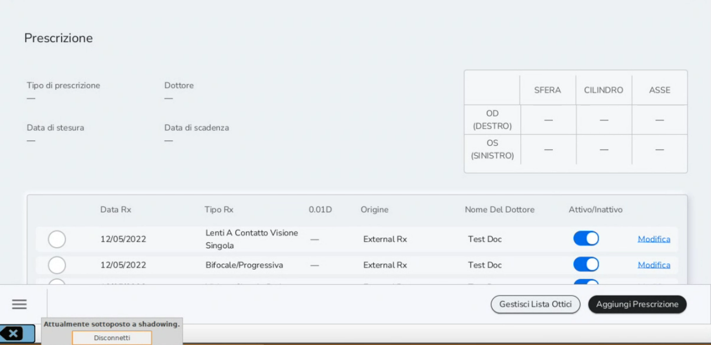
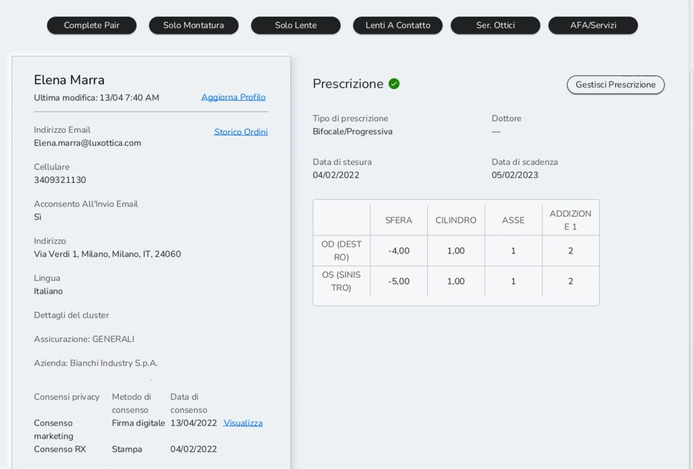
- Accedendo ad un Profilo Cliente, cliccando su Servizi Ottici -> Gestisci Lista Ottici.
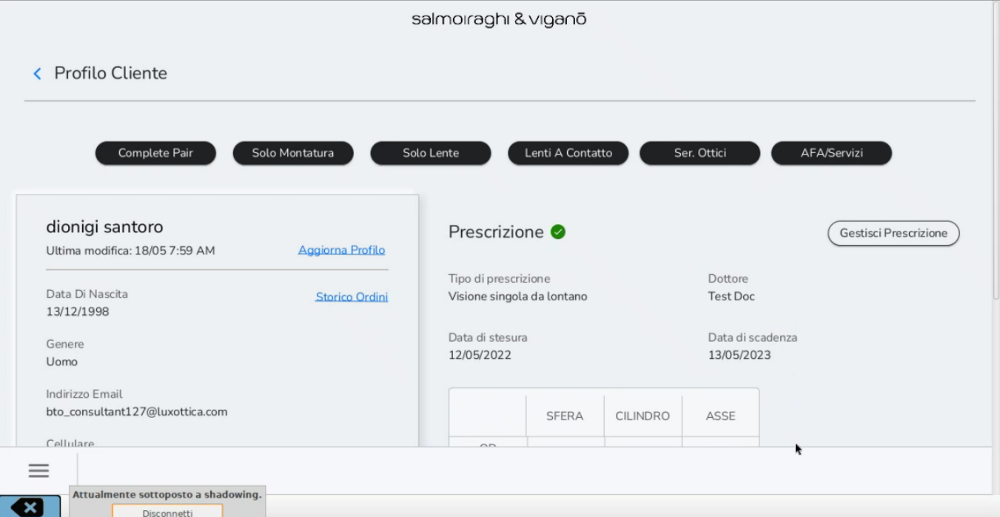
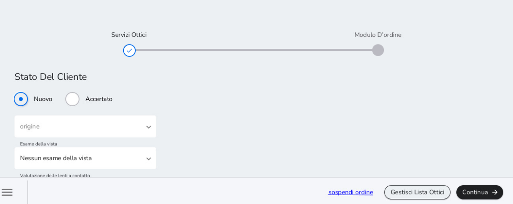
Nella sezione Cerca Ottico, ricercare il nominativo dell'Ottico interno da inserire nella sotto lista e flaggare in sua corrispondenza come mostrato in figura. È possibile aggiungere altri ottici alla lista interna utilizzando sempre i campi sulla sinistra e cliccando su Cerca.
Per ricercare ottici interni inserire in Cognome e Nome il cognome e il nome dell'ottico, mentre in Posizione inserire Ottico Interno come da esempio. Selezionare il record di interesse, cliccando su di esso e poi flaggare il tab per settare la persona come interna.
Il terzo campo Tipo di dottore, NON VA COMPILATO.
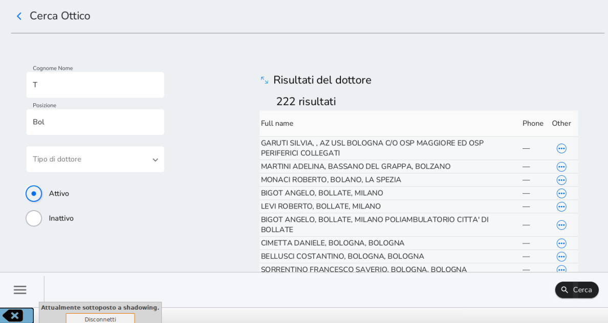
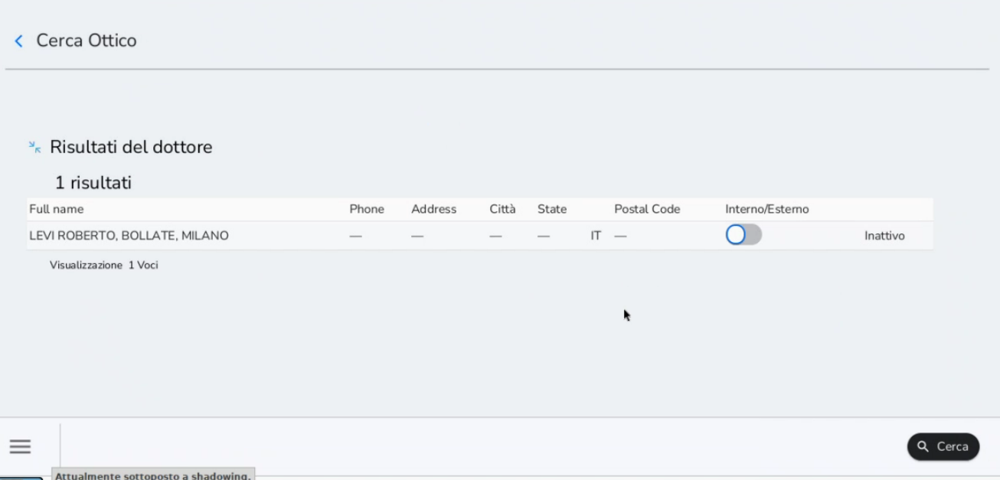
Registrazione Check-up -- Ricetta -- Prima applicazione LAC
Il flusso di registrazione check-up, ricetta o prima applicazione LAC su Ciao! Optical condotto attraverso l'iPad è la modalità consigliata.
Per inserire i dati di una ricetta, un check-up o di una prima applicazione LAC il processo da seguire è il seguente:
-
Registrazione degli stessi a sistema attraverso la sezione Ser.Ottici
-
Inserimento dei dati del check-up, della ricetta o della prima applicazione LAC nell'anagrafica del cliente attraverso Gestione Prescrizioni
Per registrare un check-up o una ricetta accedere alla sezione Profilo Cliente e selezionare in alto il tasto Ser.Ottici.
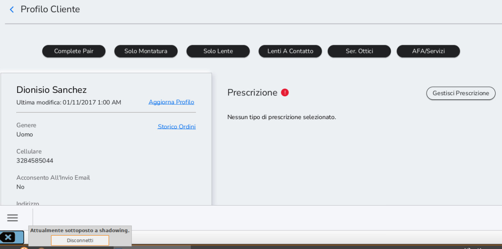
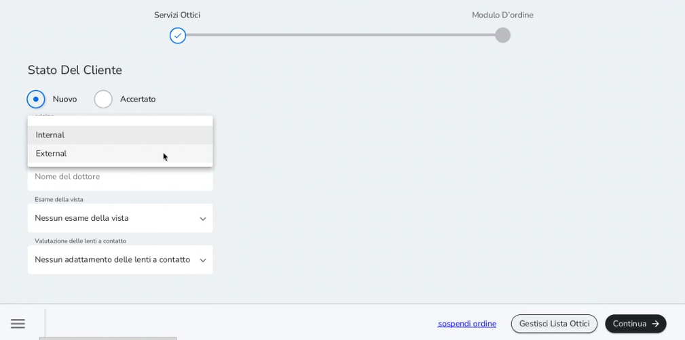
Compilare i dati richiesti:
-
Stato del Cliente: indicare se il paziente è nuovo o meno (il riferimento è al cliente come paziente. Se non è la prima volta che il cliente effettua un check-up, ed è quindi già paziente per Salmoiraghi&Viganò, selezionare Accertato)
-
Origine: Esterno (ricetta di medico oculista esterno); Interno (controllo effettuato da ottico interno)
-
Esame della vista: indicare se si sta registrando una ricetta esterna o un check-up interno
-
Valutazione delle lenti a contatto: selezionare Prima applicazione LAC per registrare una Prima Applicazione LAC. In questo caso sarà necessario selezionare anche la voce di Check-up nel campo Esame della vista.
Solo dopo aver selezionato l'origine, sarà possibile inserire il nome dell'ottico interno o del medico oculista esterno nel campo Nome digitandone il valore. Dopo aver digitato le prime lettere il sistema propone una lista ristretta da cui selezionare.
Se il medico oculista è già presente nella lista, è sufficiente selezionarne il nominativo per procedere nel flusso di vendita. Alcuni medici oculisti potrebbero essere presenti due volte nell'elenco. Quando il nome è associato a una città si fa riferimento allo studio privato, il secondo, invece, fa riferimento allo studio in cui opera.
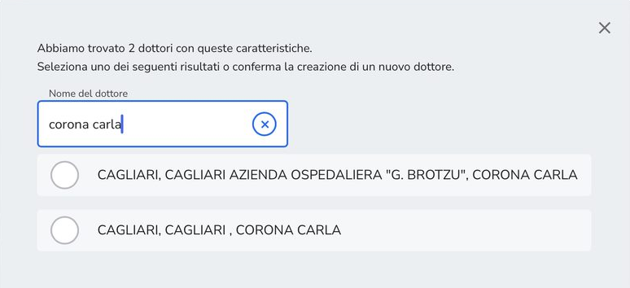
Per quanto riguarda la lista di Medici Oculisti esterni potrebbe esservi la necessità di segnalare una ricetta di Medico oculista non presente nella lista unica. In questo caso, in fase di registrazione della ricetta selezionare il valore nuovo medico oculista.
In un secondo momento aprire un ticket GLPI categoria Sviluppo Business 02. Classe Medica segnalando la presenza di un nuovo medico oculista con relativi dettagli. Con l'aggiornamento della lista il nominativo sarà visibile e sarà possibile aggiornare di conseguenza la prescrizione d'interesse.
Una volta completati i campi non cliccare Continua ma selezionare la voce in basso a destra Aggiungi prescrizione
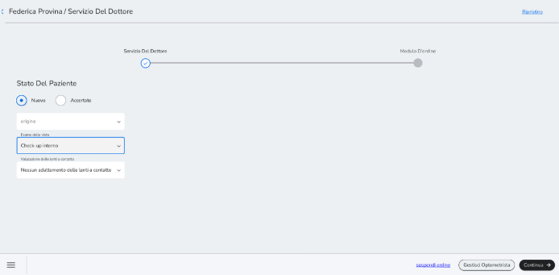
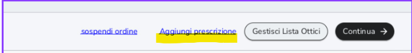
Una volta completati i campi non cliccare Continua ma selezionare la voce in basso a destra Aggiungi prescrizione
Cliccando su questo tasto il sistema vi riporta direttamente nella schermata per l\'inserimento della prescrizione. Il dato di origine e il nome dell\'ottico/ medico oculista verranno riportati automaticamente senza che vengano reinseriti.
In più sempre in questa schermata potrete aggiungere anche un\'altra prescrizione, premendo il tasto Aggiungere Altro, che apre una nuova schermate di prescrizione.
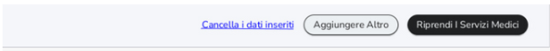
Per esempio, questo metodo potrebbe essere molto utile per un cliente progressivo per il quale vogliate creare più di una prescrizione (progressiva da lontano e da vicino)
Una volta terminata la creazione delle prescrizioni che desiderate, premere sul tasto Riprendi servizi medici, per tornare alla schermata iniziale. Da qui procedete con continua alla fase di emissione di scontrino a zero cliccando su Procedi al pagamento.
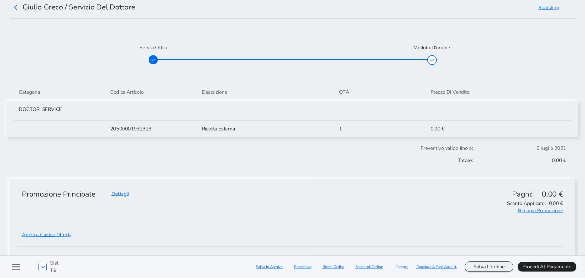
Cliccare su Transazione completata per concludere la registrazione. Di conseguenza, cliccando su Stampa la scontrinatrice fiscale emette un documento gestionale riportante un servizio a valore 0. Questo documento gestionale non è da consegnare al cliente.
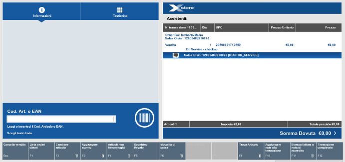
Da iPad il flusso segue quanto riportato sopra. L'unica differenza è la posizione del tasto Transazione Completata: una volta su Xstore, cliccare sull'icona di menù in alto a destra e successivamente su Transazione Completata
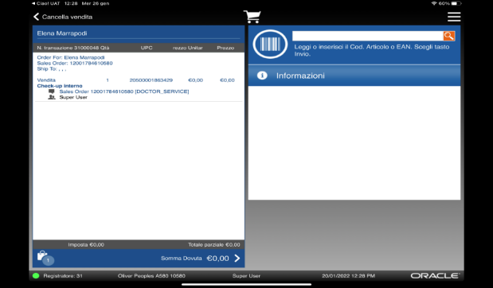
Inserimento dati Check-up -- Ricetta -- Prima applicazione LAC
Per procedere al secondo step del processo, che prevede l'inserimento dei dati medici nell'anagrafica del cliente, accedere al Profilo Cliente, cliccare su Gestisci Prescrizioni e successivamente su Aggiungi prescrizione.
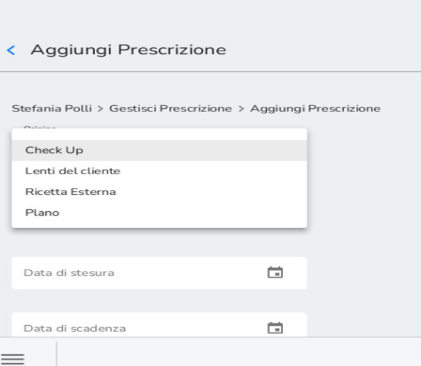
Il primo campo da compilare è l'origine. Ci sono quattro opzioni:
-
Check up
-
Lenti del cliente
-
Ricetta esterna
-
Plano
Successivamente compilare anche i seguenti campi:
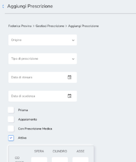
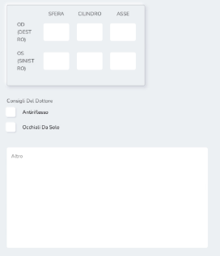
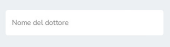
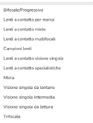
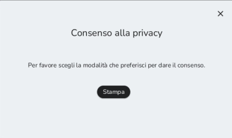
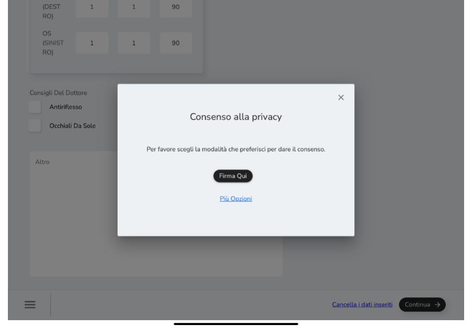
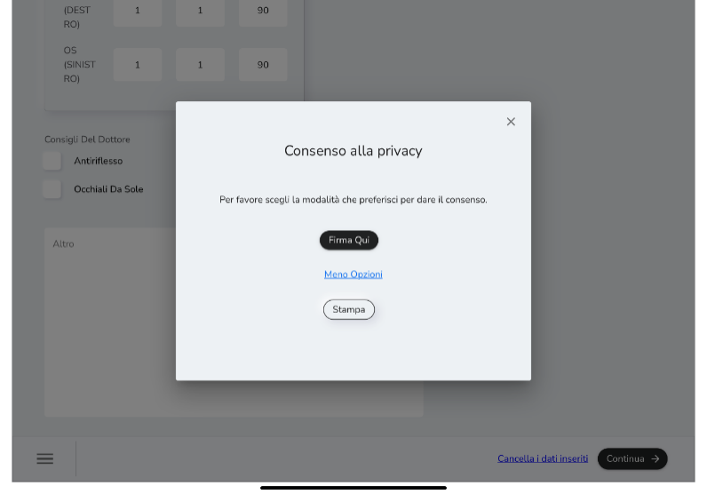
Cliccare su Continua per attivare la raccolta dei consensi medici. Il rilascio dei consensi privacy per i dati medici avviene via stampa o firma digitale (da iPad).
Una volta aggiunta la nuova prescrizione, questa sarà visibile nello storico delle prescrizioni del cliente come mostrato in figura.
Flaggando sulla sinistra in corrispondenza della prescrizione d'interesse è possibile attivare il tasto Seleziona Prescrizione.
Cliccarlo per selezionare una prescrizione per una vendita.
Una prescrizione non può mai essere eliminata ma soltanto resa inattiva. Alla scadenza della prescrizione, la selezione diventa automaticamente inattiva.
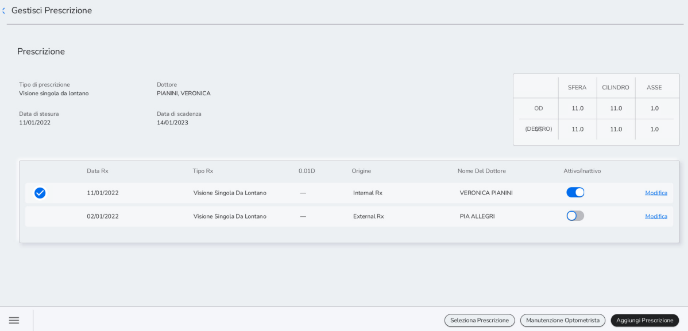